Ribbon
visualize your Spotify listening data
Rush Hour Anxiety
play as a subway-riding, test-taking, weirdo-dodging NYU student

Bobbi's Bubble-Tastic Birthday Bash
pop some bottles at a kid's birthday party
WHAT A SHAME!
led brand and merchandise design for an indie artist

Mashup
proposed a new way to share music
Ribbon
what
With the slogan “Your Spotify Wrapped With A Bow“, Ribbon is a website displaying visual-focused infographics of users’ Spotify listening data.
Why
Combining my passions for music, color design, and coding, this project has been a rewarding lesson in problem-solving and served as my final project for Introduction to Web Design.
How
The overall design mirrors Spotify’s brand design through bold, minimalistic combinations of shapes and colors. Then, using the Spotify API, color palettes and typography are personalized to each user depending on their top songs, artists, and genres.
TASKS
- Web Development & Design
- API Integration
- UI/UX
TOOLS
- HTML/CSS
- JavaScript
- Illustrator
- Figma
TYPE
- School Project
TIME
- Fall 2024
Prototyping
For the Figma prototype, I drafted a unique but familiar visual identity by keeping Spotify Wrapped’s minimal aesthetic and card layout while adding unique design elements and colorways.
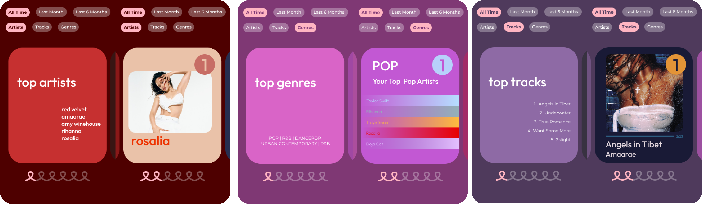Designing
This project had a lot of firsts for me, from integrating the Spotify API to creating a card system. The final site is a result of several tutorials, articles, and forums. My baseline goal was for each data point/card to visually reflect itself through color, type, and layout.

FINAL
Final features include:
- Successful integration of login authorization & API data fetching
- Time and data type filtering
- Personalized graphics, including genre-specific fonts and color palettes
- Smooth fade-in and fade-out transitions
Rush Hour Anxiety
what
Rush Hour Anxiety is a web game that puts players in the stressful shoes of a procrastinating NYU student riding the subway.
Why
Created for HackNYU’s 2023 Mini Hackathon, following the theme "New York". Won 1st in the Gaming category.
How
Through user testing, in-depth research of the MTA’s style, and reflections on our own experiences, my team and I were able to design a user-friendly interface that reflects the game’s individual style and familiar environment.
TASKS
- UI/UX Design
- Tech Artist
- Art Direction
TOOLS
- Illustrator
- Procreate
- Unity
TYPE
- Competition
TIME
- Fall 2024
Style
We started with identifying the MTA’s recognizable visual motifs such as their use of Helvetica type, contrasting colors, and stylized illustration.
Taking inspiration from these elements, our style pairs a graffiti-inspired, cartoon-y style with cheeky, referential graphics to reflect the silly, youthful, and familiar nature of the gameplay.


Navigation
While playtesting, we realized players wouldn’t realize looking at enemies is a combat move because they would stay on the main quiz screen.
As a result, we added constant on-screen navigational UI to show:
- Which screen the player is on
- Which screen enemies are on
- When combat is effective

Final Screens


Bobbi's Bubble-Tastic Birthday Bash
what
Wreck the party and spray kids with champagne to ruin Bobbi's party! Bobbi's Bubble-Tastic Birthday Bash is a game about an adult getting drunk at a kid's birthday party and causing mayhem.
Why
Made with a team of 6 for the 2025 NYU Global Gam Jam by. Following the themes of "Bubbles" and "Y2K", we wanted our game to feel like the quick, quirky flash games we played as kids in the early 2000's.
How
In under 72 hours, we were able to fully develop the full game-play loop, including a difficulty scale and online leaderboard. Taking inspiration from early 2000's Cartoon Network, the art team used exaggerated shapes, bright colors, and bouncy animations to create a unique style reflecting the game's quirky, fast, and fun gameplay.
TASKS
- UI/UX Art
- Game Design
- Art Direction
TOOLS
- Illustrator
- Procreate
- Unity
TYPE
- Competition
TIME
- January 2025
Style
Our art uses the familiar shapes and silhouettes of early 2000's cartoons like Sixteen and Foster's Home For Imaginary Friends.
For the UI, I combined this art style with the Frutiger Aero aesthetic, reflecting both the "Y2K" theme and the refreshingly nostalgic vibe of the game.
Final Screens
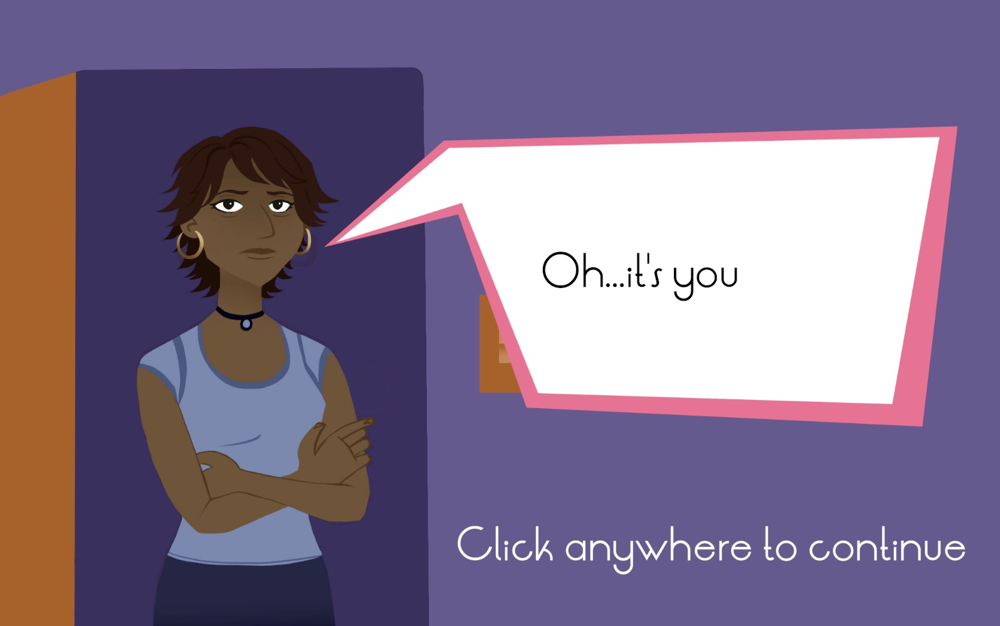 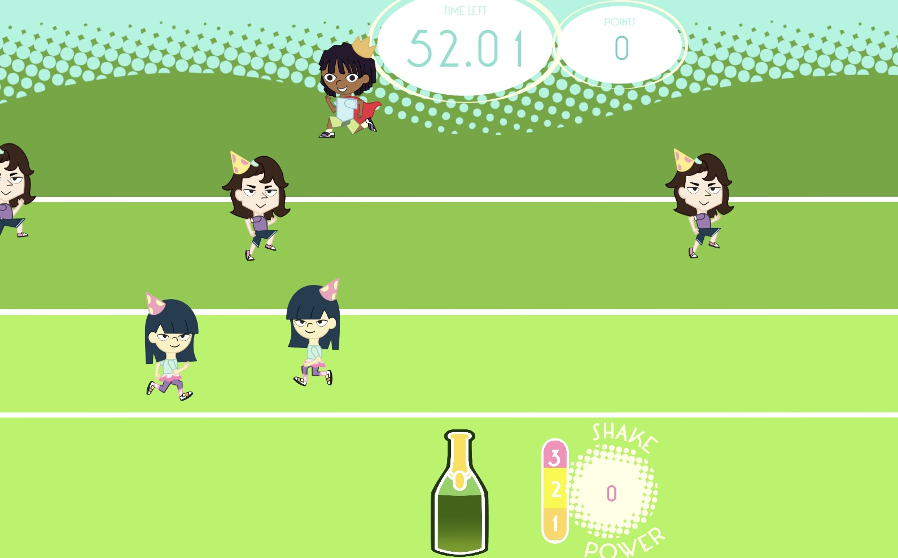 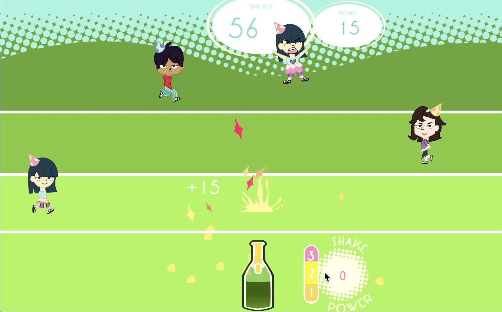 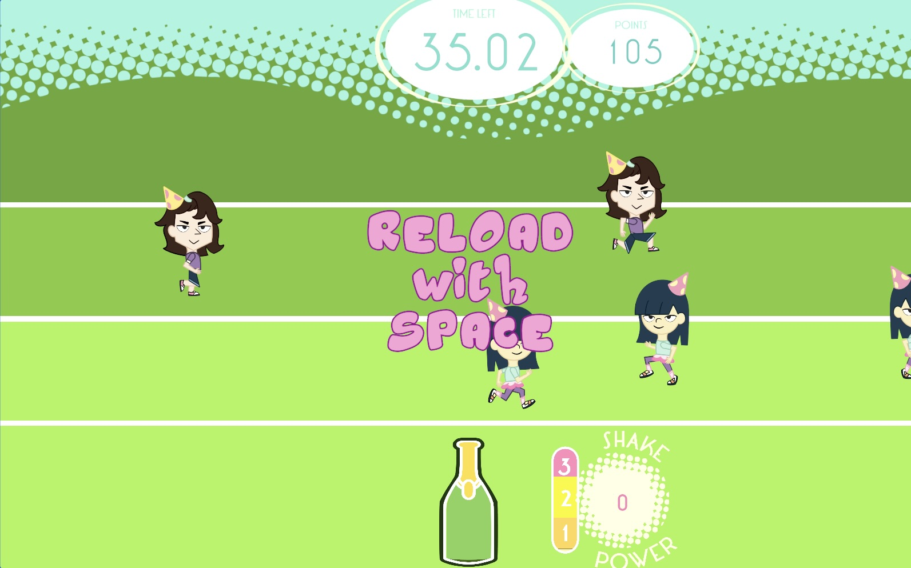NEXT STEPS
I'm in the process of making a physical controller that would let players actually shake and pop a bottle. I currently have a lo-fi prototype of the working breadboard, and am in the process of 3D modelling the bottle.
Watch me play a round using the lo-fi prototype!
WHAT A SHAME!
what
I led the brand design of indie artist Hyejin's debut EP WHAT A SHAME!, art directing multiple promotional projects such as merchandise, social media, and video.
Why
This was a freelance project supporting the EP's promotional rollout.
How
I visually reflected the EP’s sound and story through multiple promotional projects such as merchandise, liner notes, and video. Key design elements incorporate the futuristic design motifs of 90’s/early 2000’s pop culture and the dramatic typography of vintage film cards.
TASKS
- Graphic Design
- Product Design
- Video & Photo Editing
- E-Commerce
TOOLS
- Illustrator
- Photoshop
- Premiere Pro
- Shopify
TYPE
- Freelance
TIME
- 2023
Development
After speaking with Hyejin, I learned about her love for early 2000’s R&B/Soul artists like Amy Winehouse and Norah Jones. We decided to combine Y2K and vintage aesthetics to reflect Hyejin’s current sound and her nostalgic influences.

Design
Final graphics heavily reference early film title cards through the use of exaggerated script, decorative borders, and whimsical graphics.
Illustrations takes heavy inspiration from Y2K cyber culture’s chunky fonts, metallic textures, and organic shapes.


Product Images


Mashup
what
Mashup is a proposed multiplayer, mobile rhythm game that allows friends to share songs in the form of a round in the game. The full proposal can be viewed more in depth in its research paper and presentation.
Why
Spurred by my personal frustration with my Spotify recommendations, I wanted to identify a solution that would be both through detailed, thoughtful research, design, and development.
How
The project includes the research process that led me to identify the problem with recommendation algorithms, along with evidence supporting my proposal. It also includes the steps I took towards realizing the game itself.
TASKS
- Research & Development
- Product Design & Development
- Presentation Design
TOOLS
- Illustrator
- Figma
- Unity
- Zotero
TYPE
- School Project
TIME
- Fall 2024
Research
My goal was to identify how algorithmic vs. natural music recommendation fundamentally differ by asking what is music, what is music taste, and how do we form music taste.
Problem
A central aspect of music taste formation is social interaction. Algorithmic music recommendation lack opportunities for social engagement between users, leading to results lacking in nuance or personal meaning.
Hypothesis
If users were prompted to actively engage with the music shared with them, they could develop a new dimension of meaning attached to the music.
Solution
A multiplayer rhythm game could encourage active and authentic social interaction through gameplay and competition.

Wireframes
Through paper and Figma wireframes, I established the user journey, game flow, and general style of the project.
I then iterated based on player feedback.
Design
I aimed to develop a unique style that balanced the DJ themes’ fun vibrancy with Spotify’s simplicity and legibility. The final aesthetic adds vibrant colors, graffiti-esque fonts, and hand-drawn elements to Spotify’s existing layouts for a smooth, yet exciting user experience.

Final Presentation
 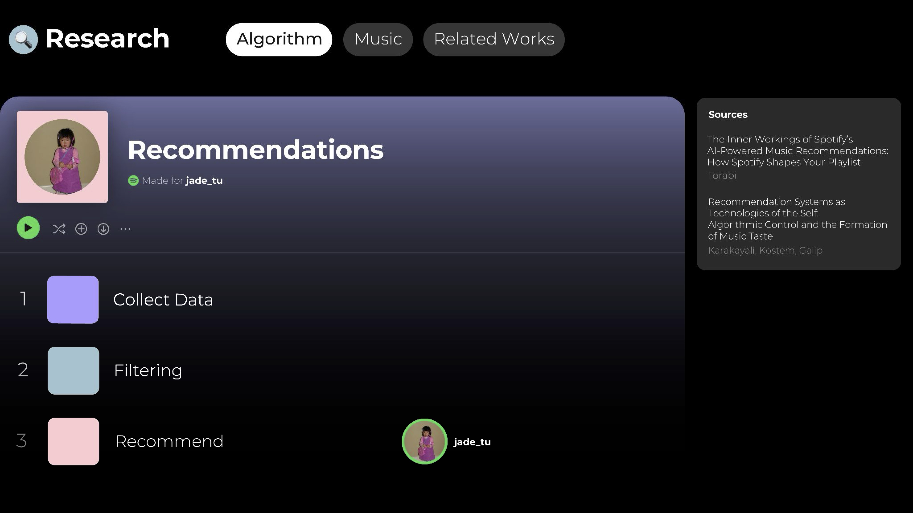
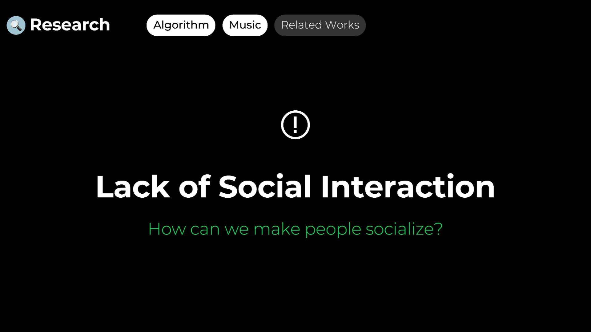
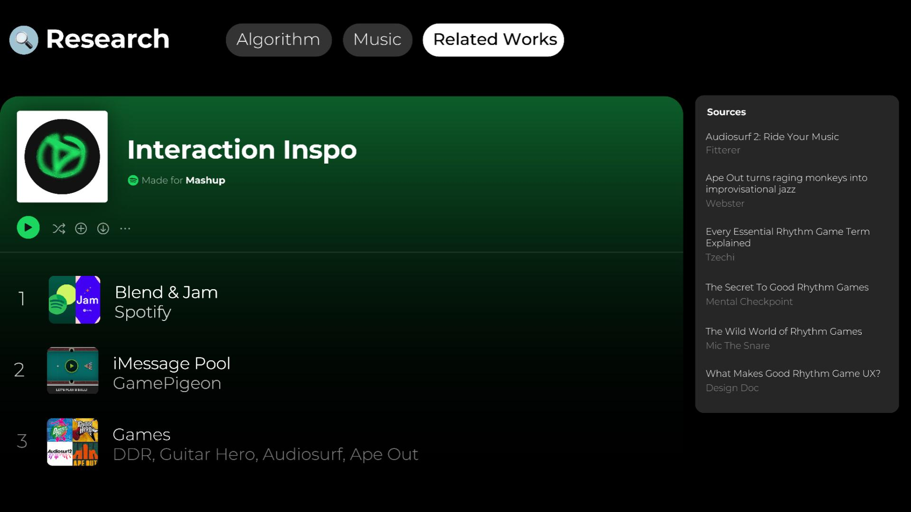
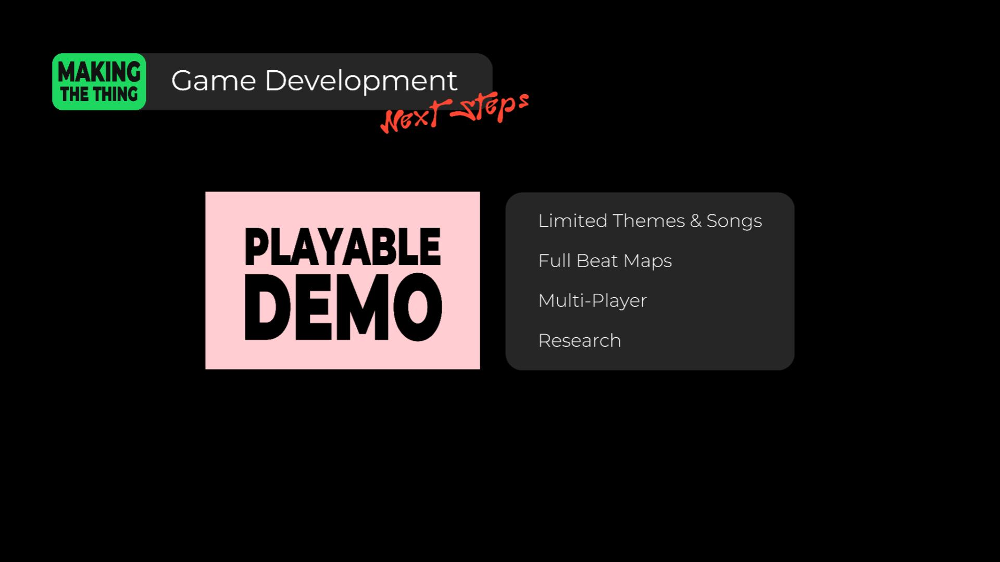
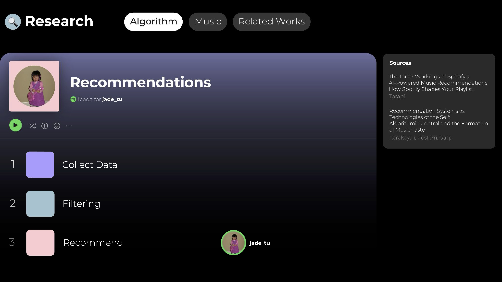
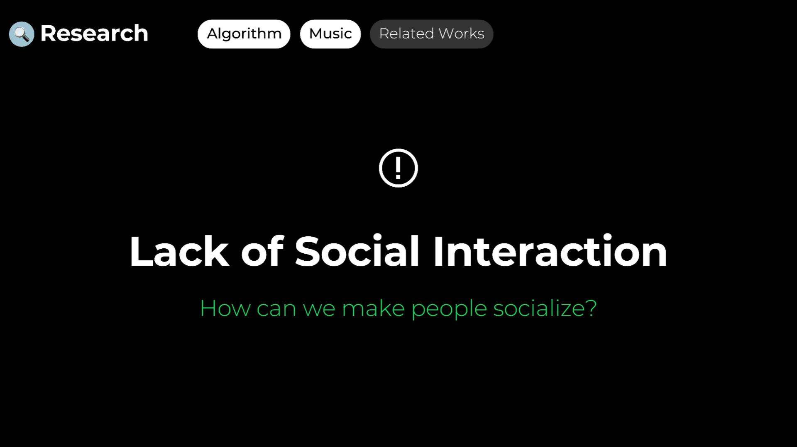
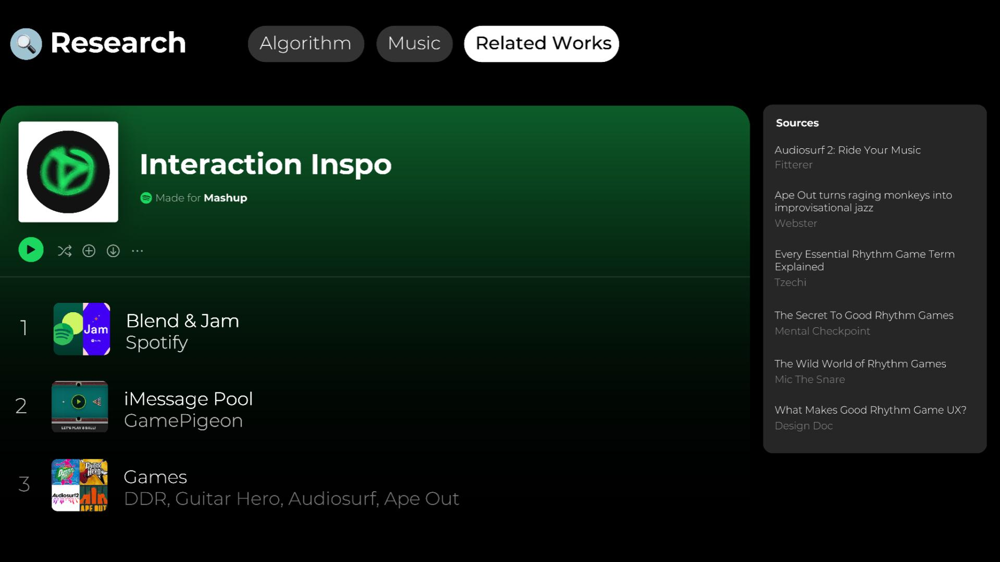
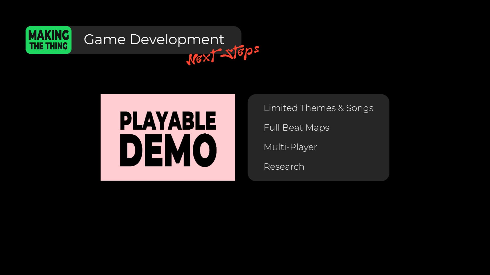
Winter Show
Rush Hour Anxiety Poster
Sabai Design
Social/Digital
Oscar de la Renta
Social
Bleecker Street Media
Social/Digital
Pom Pom
Interactive
Hook'd
Interactive
Mapify
Interactive
ReplayAI
Interactive
Sound Waves
physical
Hi!
I’m Jade, a multi-media designer and recent Interactive Media Arts graduate from NYU.
I am passionate about solving design problems across media and am experienced in digital marketing, game, and web design. I thrive in a collaborative environment and am always eager to learn new skills.
Hobbies
- Puzzles
- Comics
- Concerts
Latest Media Consumption
- 🎬 Princess Mononoke
- 📺 Mythic Quest
- 📚 Madame in a Fur Coat by Sabahattin Ali